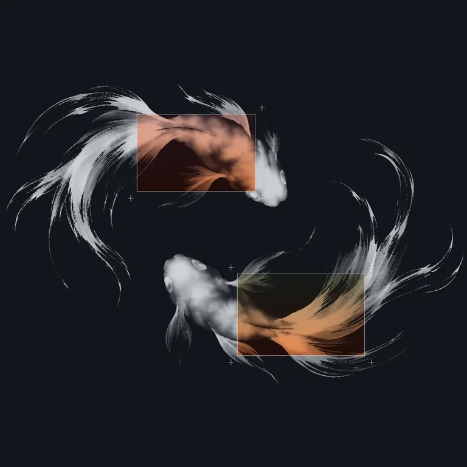

Gyeollak / GameGame
Game
Room금붕어를 따라가는 작은 방
게임은 홈을 가볍게 두려고 따로 연다. 아직 만들지 않았어. 규칙·조작·보상이 정해지면 이 페이지에만 불러온다.
준비 중홈으로
- 01게임 종류미정 — 혜리가 정할 것
- 02폰 조작한 손 탭 기준으로 설계
- 03불러오기이 페이지에 들어올 때만 로드
게임은 홈을 가볍게 두려고 따로 연다. 아직 만들지 않았어. 규칙·조작·보상이 정해지면 이 페이지에만 불러온다.
준비 중홈으로